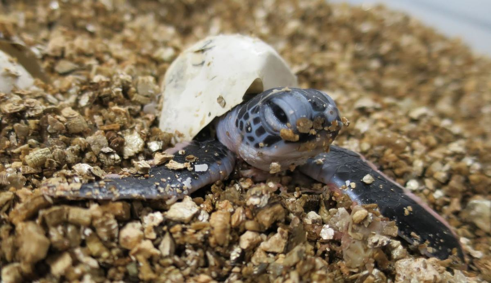

The Kosgoda Turtle Hatchery is a renowned conservation project located in Kosgoda, Sri Lanka. It is dedicated to the protection and preservation of sea turtles, as well as the promotion of sustainable turtle conservation practices. Here are some brief details about the Kosgoda Turtle Hatchery:
Objectives: The primary objective of the Kosgoda Turtle Hatchery is to safeguard sea turtle populations, particularly the endangered species found in Sri Lanka, such as the Green Turtle (Chelonia mydas), Hawksbill Turtle (Eretmochelys imbricata), Olive Ridley Turtle (Lepidochelys olivacea), and Loggerhead Turtle (Caretta caretta).
Conservation Efforts: The hatchery actively engages in the collection of sea turtle eggs, protecting them from natural and human threats, and providing a safe environment for the hatching of eggs. They also work to raise awareness among local communities and tourists about the importance of sea turtle conservation.
Egg Incubation: The collected sea turtle eggs are carefully placed in sand-filled enclosures, simulating their natural nesting environment. The hatchery ensures optimal conditions for incubation, monitoring temperature and humidity levels to maximize the hatching success rate.
Release Programs: Once the turtle hatchlings emerge from their nests, the Kosgoda Turtle Hatchery facilitates the safe release of these baby turtles into the ocean. This process is conducted during the nighttime to increase their chances of survival and minimize exposure to predators
Education and Research: The hatchery serves as an educational center, offering informative tours and interactive programs for visitors. It aims to raise awareness about the conservation challenges faced by sea turtles and promote responsible tourism practices. The hatchery also conducts research and collaborates with local and international organizations to gather data on sea turtle populations and contribute to scientific knowledge.
Visitor Participation: Visitors to the Kosgoda Turtle Hatchery have the opportunity to witness turtle hatchlings up close and learn about their life cycles, habitat, and threats. The hatchery encourages responsible visitor participation, such as supporting their conservation efforts through donations or volunteering.

The Kosgoda Turtle Hatchery plays a vital role in the conservation of sea turtles in Sri Lanka and serves as an important hub for raising awareness and promoting sustainable practices to protect these magnificent creatures.